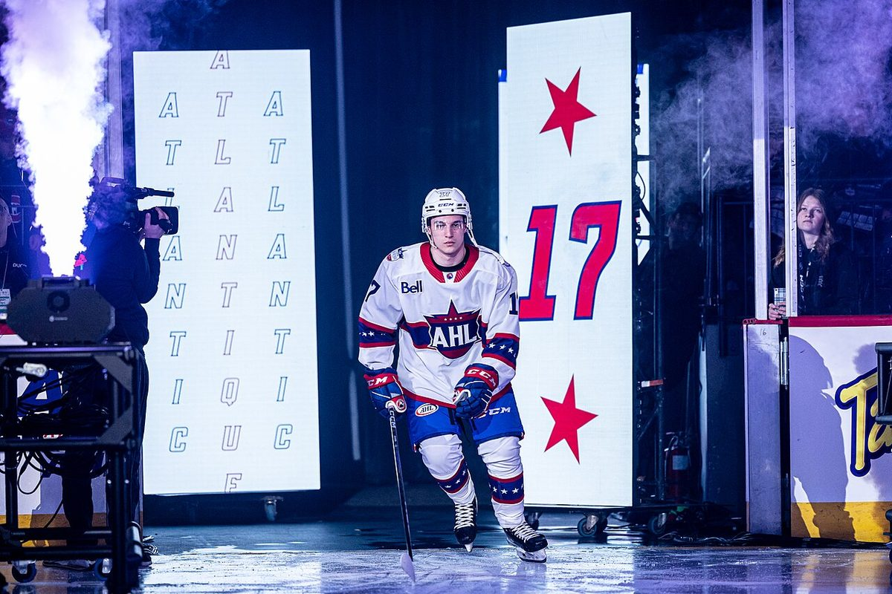
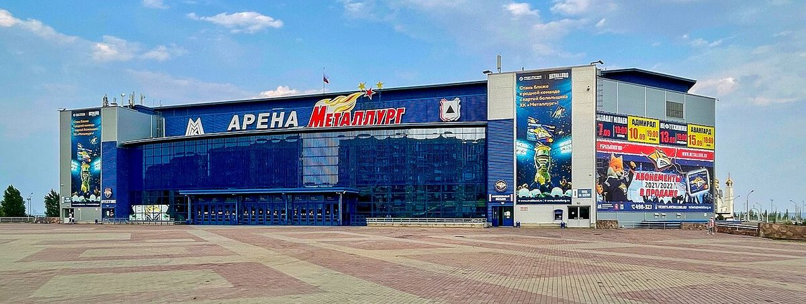

斯巴达克与冶金工人交换四名前锋 马尔采夫和莫罗佐夫转投马格尼托哥尔斯克
莫斯科斯巴达克将米哈伊尔·马尔采夫和伊万·莫罗佐夫的签约权送往冶金工人，换来鲁斯兰·伊斯哈科夫、伊戈尔·涅恰耶夫、后卫弗谢沃洛德·科马罗夫的签约权以及经济补偿。

发生了什么
据大陆冰球联赛（KHL）宣布，莫斯科斯巴达克与马格尼托哥尔斯克冶金工人于2026年11月18日完成了一笔涉及四名前锋的交易。
冶金工人得到前锋米哈伊尔·马尔采夫和前锋伊万·莫罗佐夫的签约权。斯巴达克得到前锋鲁斯兰·伊斯哈科夫和伊戈尔·涅恰耶夫、在北美效力的后卫弗谢沃洛德·科马罗夫的签约权，以及经济补偿。两家俱乐部没有公布补偿金额。Sports.ru援引《体育快报》的报道称，金额为5000万卢布。

球员情况
据联赛数据，马尔采夫本赛季代表斯巴达克在KHL出战22场，得到8分（5球3助攻）。据Sports.ru报道，2023年加盟斯巴达克的莫罗佐夫已于7月与俱乐部解约，本赛季尚未出场。
另一方面，伊斯哈科夫本赛季代表冶金工人出战25场，得到17分（8球9助攻）；涅恰耶夫出战24场，得到14分（6球8助攻）。
冶金工人的表态

据Sports.ru报道，冶金工人体育总监叶夫根尼·比留科夫表示，俱乐部长期以来一直在寻找一名中锋，这笔交易是围绕位置需求进行的。他称马尔采夫是一名攻守兼备的中锋，是同位置最好的球员之一；莫罗佐夫则是一名经验丰富、富有创造力的进攻球员。他说两名球员都与冶金工人签下了两年合同。
比留科夫表示，与球员分别总是很难，尤其是球迷喜爱的球员，但市场现实让俱乐部别无选择。他说冶金工人希望这两名前锋能为球队中路增加侵略性和深度。
下一步
KHL常规赛仍在继续。两家俱乐部尚未透露新球员何时首次登场。